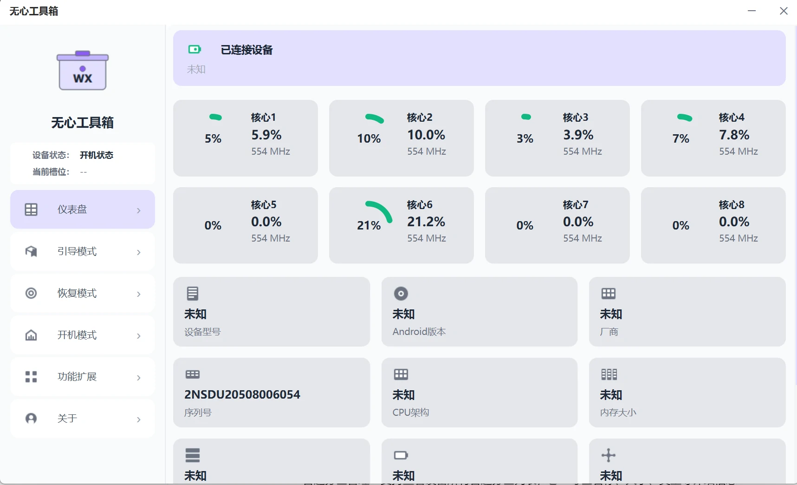
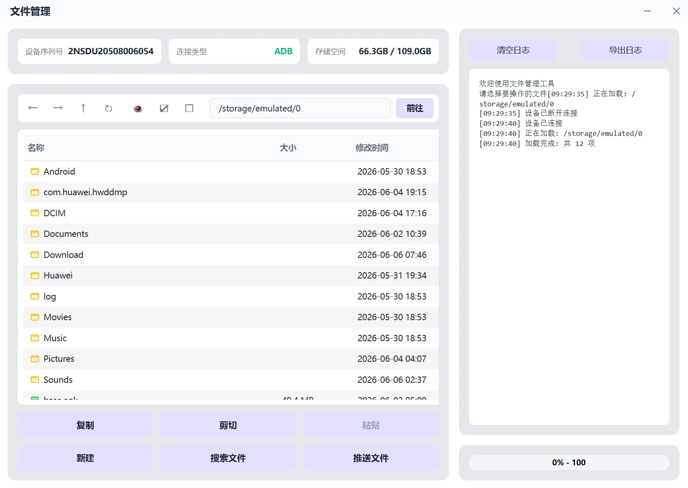

设备仪表盘
一目了然，全面掌握设备信息

分区管理
全方位掌控设备分区，安全高效
普通分区管理
针对传统分区结构的完整管理方案。支持刷写分区将镜像写入指定分区，擦除分区清除分区数据，格式化数据重置用户存储，去除AVB2.0验证解除启动校验，切换槽位在A/B分区间自由切换，去除FRP锁绕过工厂重置保护，以及解锁/上锁BL控制Bootloader状态。
动态分区管理
专为动态分区（Dynamic Partition）设备打造。支持刷写分区与擦除分区操作，格式化数据清理存储，去除FRP锁解除保护，调整逻辑分区大小灵活分配super分区空间，以及逻辑分区管理对逻辑分区进行创建、删除与配置。
重启管理
一键控制设备重启模式。支持重启系统正常启动设备，重启到Recovery进入恢复模式进行刷机与备份，重启到Fastbootd进入Fastbootd模式管理动态分区，以及重启到EDL进入紧急下载模式进行底层刷写。
文件管理
直观高效，轻松掌控设备文件

功能扩展
更多实用工具，覆盖进阶需求
安装驱动
一键安装Android USB驱动，无需手动查找与配置，连接设备即刻识别，省去繁琐的驱动安装流程。
打开设备管理器
快捷打开系统设备管理器，随时检查Android设备的连接状态与驱动情况，排查连接问题一目了然。
命令行工具
内置终端支持adb、fastboot、hdc命令直接执行，可自定义主题配色与字体大小，打造专属命令行体验。
Payload解包工具
解析Android OTA升级包中的payload.bin文件，提取所需分区镜像，为刷机与降级提供便利。
SELinux规则合并工具
支持抓取日志、加载文件、规则提取、规则合并、规则导出、规则优化，一站式完成SELinux策略调整。
特色功能
全面覆盖 Android 调试与刷机的每一个环节
01
智能设备管理
- 实时设备检测 — 自动检测 ADB 和 Fastboot 设备连接状态，实时更新设备信息
- 详细设备信息 — 显示设备型号、制造商、Android 版本、CPU 架构、内存、存储等详细信息
- CPU 监控 — 实时监控设备 CPU 使用率，可视化展示性能数据
- 设备缓存 — 智能缓存设备信息，减少重复查询，提升响应速度
02
分区管理工具
- 普通分区管理 — 查看设备所有普通分区列表，包括分区名称、大小、类型等详细信息
- 镜像刷入 — 将 .img 镜像文件刷入到指定分区，支持单槽位和 AB 双槽位刷入
- 批量擦除 — 多选分区批量擦除数据，提升操作效率
- 动态分区管理 — 支持 Android 动态分区系统，查看动态分区列表和大小
- 逻辑分区管理 — 管理动态分区中的逻辑分区，可查看、擦除、格式化
- 调整分区大小 — 灵活调整动态分区大小，满足不同需求
- 其他功能 — 分区擦除、格式化、大文件优化、进度显示、超时保护
03
重启管理
- 多种重启模式 — 支持重启到系统、Recovery、Bootloader、Fastbootd、EDL 等模式
- 一键操作 — 快速切换设备启动模式，方便刷机和调试
- 安全确认 — 重启操作前有确认提示，防止误操作
04
Payload 解包工具
- 支持最新格式 — 支持 Android 10+ 的 Payload 镜像格式（.bin 和 .zip）
- 分区列表查看 — 查看 Payload 镜像中的所有分区及其大小信息
- 全选解包 — 一键解包 Payload 镜像中的所有分区
- 选择性解包 — 选择特定分区进行解包，可全选/取消全选
- 实时进度 — 实时显示解包进度百分比和状态信息
- 日志输出 — 详细显示解包过程日志，支持复制日志内容
- 任务控制 — 支持中途停止解包任务，灵活控制操作流程
05
命令行工具
- 多命令支持 — 内置 ADB、Fastboot、HDC 三种命令行工具
- 多标签页 — 支持最多 4 个命令行标签页，方便同时执行多个命令
- 命令历史 — 自动记录命令历史，支持上下键快速切换
- 快捷键操作 — 支持 Ctrl+C 停止、Ctrl+L 清空等快捷键
- 自定义设置 — 可调整字体大小、主题、超时时间等
06
驱动安装
- 内置驱动 — 内置 Android USB 驱动，无需额外下载
- 一键安装 — 快速安装 Android 设备驱动，解决设备无法识别问题
- 自动检测 — 自动检测系统环境，选择合适的驱动版本
07
现代化界面
- 精美设计 — 采用现代化 Material Design 风格，界面简洁美观
- 流畅动画 — 内置动画效果，操作流畅自然
- 高 DPI 支持 — 完美支持高分辨率屏幕，显示清晰锐利
- 自定义窗口 — 无边框窗口，支持最小化到托盘
08
单例模式
- 防止多开 — 确保同一时间只有一个程序实例在运行
- 消息传递 — 新启动的实例会将文件路径传递给已运行的实例
- 智能唤醒 — 双击文件关联时自动唤醒已运行的程序窗口
09
文件关联与智能刷入
- 支持格式 — 支持 .img、.bin、.elf 三种镜像文件格式
- 双击打开 — 双击镜像文件自动启动工具箱并进入普通分区管理
- 右键菜单 — 右键菜单集成"使用无心工具箱刷入"选项
- 智能分区识别 — 自动从文件名提取分区名（如 boot.img 识别为 boot 分区）
- A/B 槽位匹配 — 自动识别当前槽位，boot.img 智能匹配到 boot_a 或 boot_b
- 大小写不敏感 — BOOT.img 自动识别为 boot 分区
- 下划线支持 — system_ext.img 自动识别为 system_ext 分区
- 自动化流程 — 自动检测设备→读取信息→读取分区→智能匹配→确认刷入
10
文件管理工具
- 设备文件浏览 — 浏览 Android 设备上的所有文件和文件夹，实时显示文件列表
- 文件操作 — 新建文件夹、删除文件/文件夹、重命名等基本操作
- 文件传输 — 从设备下载文件/文件夹到电脑，或从电脑上传到设备
- 拖拽上传 — 直接从电脑拖拽文件/文件夹到文件列表，快速上传
- 多选操作 — 多选文件/文件夹进行批量操作，提升工作效率
- 压缩解压 — 支持 ZIP、7Z、TAR.GZ、TAR.BZ2、RAR、GZIP 等多种格式
- 密码保护 — 为压缩文件设置密码保护，确保文件安全
- 文件校验 — 计算文件的 MD5、SHA1、SHA256、CRC32 校验值
- 双击打开 — 双击文件自动下载到临时目录，用系统默认程序打开
- 搜索功能 — 在当前目录下搜索文件和文件夹，快速定位目标
- 实时监控 — 实时监控设备连接状态，设备断开时自动重置界面
- 日志系统 — 详细记录所有操作日志，支持导出日志到本地文件
- 存储信息 — 显示设备存储空间使用情况，包括已用空间和总空间
11
SELinux 规则合并工具
- Logcat 抓取 — 从已连接的 Android 设备直接抓取 AVC 拒绝日志，可自定义抓取时长
- 文件加载 — 选择已有的 logcat 日志文件进行分析，支持多文件批量处理
- 规则提取 — 自动从 logcat 日志中提取 SELinux 拒绝规则，智能解析 AVC 日志
- 智能合并 — 合并多个日志文件中的规则，自动去除重复项
- 规则优化 — 去除不相关规则和危险权限，提升规则质量
- 多格式导出 — 支持导出为 TE、CIL、Android sepolicy 三种格式
- 批量导出 — 为每个日志文件单独导出对应的规则文件
- 规则预览 — 预览合并后的规则内容，方便检查
- 规则统计 — 显示规则数量统计信息，包括导入规则数、合并后规则数等
12
彩蛋功能
- 2048 游戏 — 双击关于页面 LOGO 即可打开 2048 小游戏
- 放松娱乐 — 在工作之余可以玩一局游戏放松心情
- 鼠标键盘 — 支持鼠标点击和键盘操作两种方式